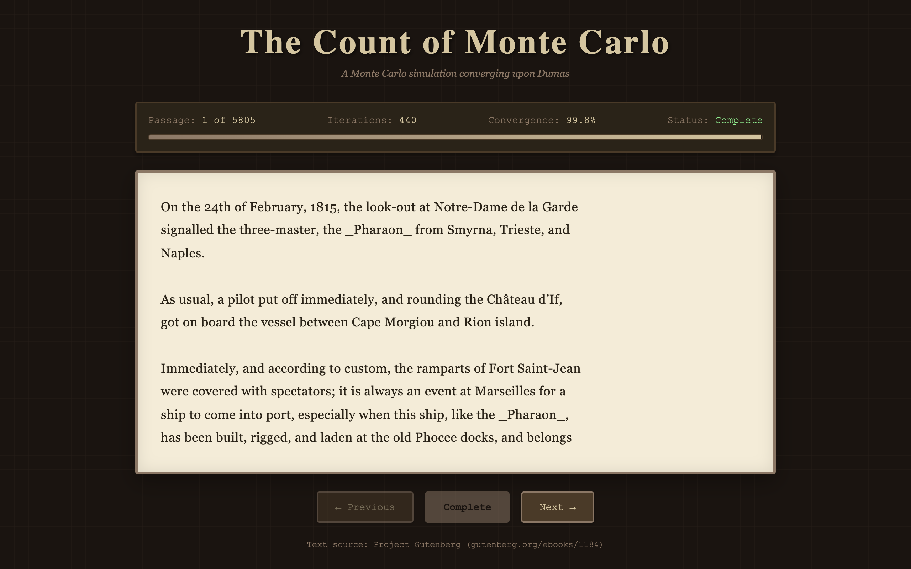

The Count of Monte Cristo by Alexandre Dumas is a long novel. A Monte Carlo simulation is a process that uses randomness to converge toward a target. Put them together and you get a simulation that starts with gibberish and gradually, character by character, converges into the text of the novel.

{kind=link}
How it works
The simulation fetches the full text of the novel from Project Gutenberg (the file 1184-0.txt included in the repo). It splits the text into passages of roughly 100 words each. For each passage, the display starts as random characters: every letter replaced by a random letter, every digit by a random digit. Spaces and newlines are preserved from the start so the text maintains its visual shape even when the content is scrambled.
Each animation frame, every incorrect character has a 3% chance of snapping to its correct value. The algorithm doesn't march left to right. It randomizes which characters get checked on each frame, so the text resolves in a scattered, organic pattern. Some characters get lucky early. Others hold out as the last few stubborn wrong letters in an otherwise correct paragraph. The convergence percentage ticks upward in the stats display until the passage hits 100% and the status flips to "Complete."
The full novel is over 450,000 words, so it's split into passages that the user can navigate with Previous/Next buttons. There's also a "Skip to End" button for anyone who wants to see a completed passage without waiting.
Visual design
The interface leans into the literary theme. The background is dark brown. The text displays on a cream-colored panel with inset shadows that suggest aged paper. Typography uses Georgia and Garamond, both serif faces associated with book typesetting. A gradient progress bar tracks convergence percentage, and the stats box shows the current passage number and iteration count.
Watching the text resolve is the whole experience. The scrambled characters create a visual texture that's almost pleasant on its own, and then individual words start emerging from the noise. You'll recognize a character name before the sentence around it has finished converging. It's a small, idle thing, but it has a hypnotic quality that makes you want to watch at least a few passages all the way through.
Implementation
The entire project is a single HTML file plus the text file. No build step, no dependencies. The animation loop uses requestAnimationFrame and the convergence logic is a few dozen lines of JavaScript. The heaviest thing the browser does is the initial fetch of the novel text, which is a few megabytes. After that, everything is string manipulation and DOM updates.